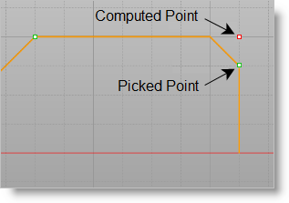

You can define the starting and ending position of the threads either by inputting the X and Z coordinate values for the start and end points or using the pick option to graphically select 2 points.
•Start XZ / End XZ
 This defines the Start and End of the Turn Threading operation. You can enter the coordinate values directly use the Pick button and then select the start and end locations directly from the turn part profile. You can use the object snaps available for selecting points. This defines the Start and End of the Turn Threading operation. You can enter the coordinate values directly use the Pick button and then select the start and end locations directly from the turn part profile. You can use the object snaps available for selecting points. •XZ Clearance
These fields allow you to set clearance along the X and Z axis. The Z Clearance is applied axially to the start of the thread. The X Clearance is an arbitrary clearance for the tool to move away from the thread. •Always create thread with no taper
Checking this box allows you to pick points on a non-straight area of the model and create a straight thread with no additional geometry creation. Refer to the illustration below:
 Always create thread with no taper |
•Dependent Parameters
You can use the Pick button under the Thread Definition section to select the thread start and end points. Once defined, the system automatically determines the Thread Length (TL), Major Diameter (D) and Taper Angle from the part model. •Thread Depth (tp) and Thread Pitch (P)
These allow you to define the Thread Depth and Pitch manually. •Hand
The type of threads to be generated (Right Handed / Left Handed) |